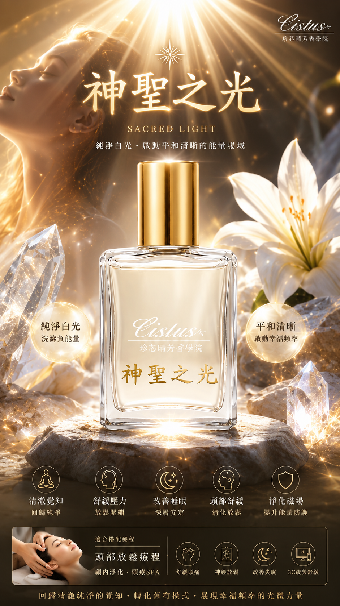
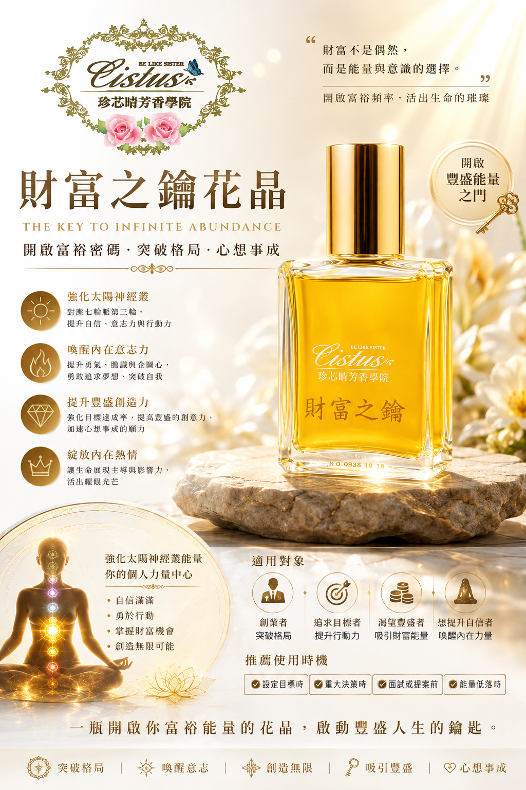

個人八字命盤資訊
年柱
--
月柱
--
日柱
--
時柱
--
個人五行命盤能量雷達圖
五行能量強弱解析：
日主「5 大生活面向」深度剖析與情緒
--
日主載入中...
特質說明...
近 5 年流年氣場走勢與花晶調和建議 (2026–2030)
掌握未來 5 年氣場高低起伏規律，依據流年波動配載相對應花晶，助您高谷躍升、低谷穩健蓄能。
2026 丙午年
✨ 豐盛爆發年
氣場強勁，能量充沛！事業與聲譽大躍進的好時機。展現領導力的同時，宜注意避免體能透支。
🌸 花晶建議：【財富之鑰 + 3號花晶】鞏固事業大局，吸引頂級資源。
2027 丁未年
🌿 穩健收穫年
承接前一年的好運，今年適合將成果轉化為長期穩定的制度與資產，著重於客戶關係與口碑。
🌸 花晶建議：【極緻大師 + 心輪花晶】維持品質口碑，促進團隊和諧。
2028 戊申年
🔄 轉折蛻變年
運勢進入步調調整期，適合修養身心、進修學習，為下一階段的大轉型做足準備。
🌸 花晶建議：【神聖之光 + 2號花晶】清理深層情緒疲憊，啟動直覺力。
2029 己酉年
🛡️ 穩健守成年
宜守不宜攻，專注於既有資產的保護與基礎建設，避免不必要的冒險投資。
🌸 花晶建議：【氣脈舒暢 + 1號花晶】穩定海底輪根基，增強身體抵抗力。
2030 庚戌年
🚀 飛躍新局年
迎來嶄新的事業高峰，過去的沉澱將爆發為強大的執行力與收穫！
🌸 花晶建議：【財富之鑰 + 神聖之光】開啟高頻磁場，迎接全新盛局。
專屬花晶調和頻率建議

神聖之光花晶
高頻轉化・開啟靈感磁場
點擊查看放大圖與解析

氣脈舒暢花晶
釋放緊繃・流暢身體循環
點擊查看放大圖與解析

財富之鑰花晶
紮根海底輪・鎖住豐盛財運
點擊查看放大圖與解析